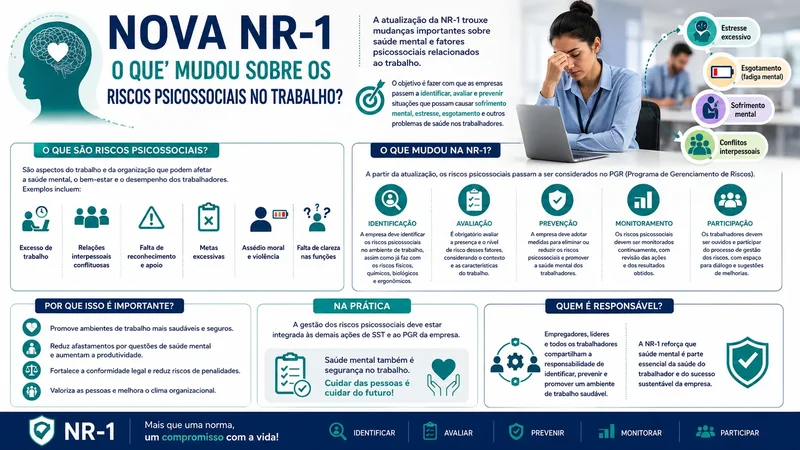
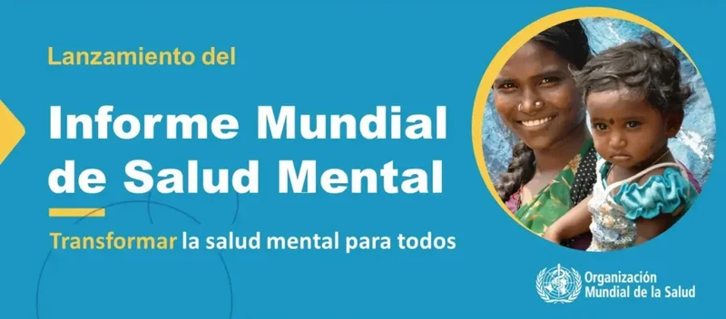
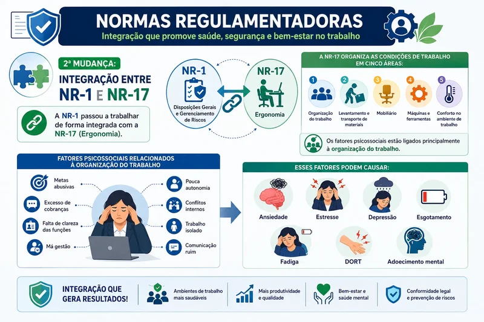
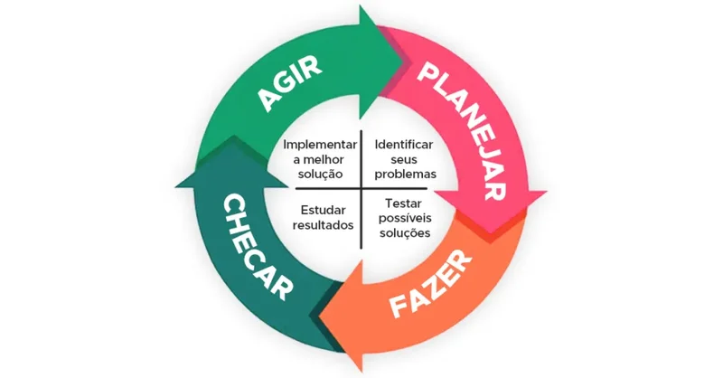
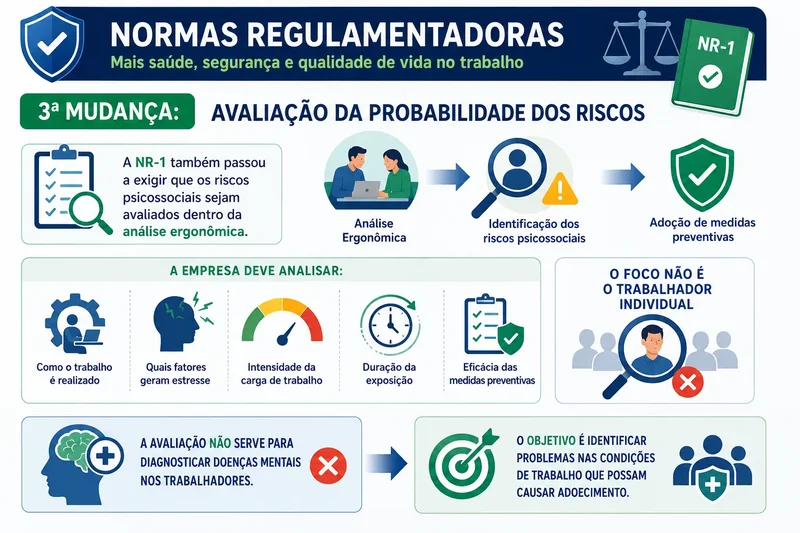
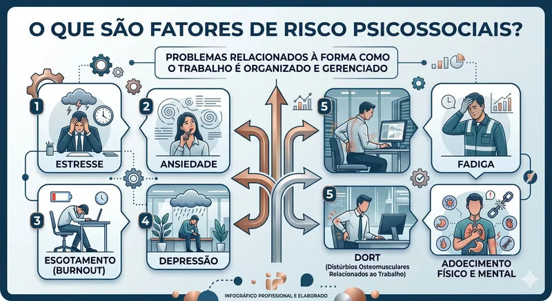

A NR-1 e a Revolução na Proteção da Saúde Mental no Ambiente de Trabalho
A NR-1 atualizada passou a incluir oficialmente os riscos psicossociais no Gerenciamento de Riscos Ocupacionais (GRO). A norma agora exige que empresas adotem medidas para prevenir problemas como estresse, assédio moral, pressão excessiva e sobrecarga de trabalho. A mudança fortalece a proteção da saúde mental no trabalho e amplia a atuação da Enfermagem do Trabalho na prevenção de doenças ocupacionais e promoção da Segurança e Saúde no Trabalho (SST).
1. O QUE É A NR-1 E POR QUE ELA MUDOU
Publicação: Portaria MTb nº 3.214/1978 | Atualização: 2024/2025
A NR-1 — Disposições Gerais e Gerenciamento de Riscos Ocupacionais — é a norma-mãe de todas as NRs. Ela estabelece o sistema de gerenciamento de riscos que as empresas devem adotar para garantir a segurança e saúde dos trabalhadores. A atualização mais recente trouxe exigências claras sobre:
- Avaliação e controle de riscos psicossociais (estresse, assédio, burnout)
- Programas de acolhimento e apoio psicológico aos trabalhadores
- Gestão da jornada de trabalho e descanso adequado
- Participação efetiva dos trabalhadores nas decisões de SST
- Integração entre saúde física e saúde mental no ambiente laboral

2. SAÚDE MENTAL DO TRABALHADOR: O NOVO FOCO DA NR-1

A Organização Mundial da Saúde (OMS) estima que depressão e ansiedade custam à economia global cerca de US$ 1 trilhão por ano em produtividade perdida. No Brasil, o absenteísmo por transtornos mentais cresceu 28% entre 2019 e 2024. A NR-1 atualizada responde a essa realidade exigindo das empresas:
Principais Riscos Psicossociais abordados:
- Estresse ocupacional: alta demanda x baixo controle
- Burnout: exaustão emocional, despersonalização, baixa realização
- Assédio moral e sexual: violências no ambiente de trabalho
- Sobrecarga de trabalho: jornadas excessivas e metas irreais
- Insegurança no emprego: precarização e incertezas futuras
3. Mudança: Integração entre NR-1 e NR-17
A NR-1 passou a trabalhar de forma integrada com a NR-17 (Ergonomia); A NR-17 organiza as condições de trabalho em cinco áreas: Organização do trabalho, Levantamento e transporte de materiais, Mobiliário, Máquinas e ferramentas, Conforto no ambiente de trabalho.
Os fatores psicossociais estão ligados principalmente à organização do trabalho.
- Metas abusivas
- Excesso de cobranças
- Falta de clareza das funções
- Má gestão;
- Pouca autonomia
- Conflitos internos
- Trabalho isolado
- Comunicação ruim
- Esses fatores podem causar: ansiedade, estresse, depressão etc..

4. Processo contínuo de melhoria (PDCA)

A NR-1 determina que a empresa mantenha melhoria contínua na saúde e segurança do trabalho utilizando o modelo PDCA:
- Planejar (Plan): Identificar os riscos psicossociais e definir medidas preventivas
- Fazer (Do): Implementar as ações na empresa.
- Checar (Check): Verificar se as medidas realmente funcionaram.
- Agir (Act): Corrigir falhas e melhorar continuamente o processo.
Importante: O acolhimento não substitui o tratamento psiquiátrico ou psicoterapêutico, mas funciona como ponte de cuidado contínuo. O enfermeiro deve registrar o acolhimento no prontuário ocupacional e acompanhar a evolução.
4. ACOLHIMENTO PSICOLÓGICO: OBRIGATORIEDADE E PRÁTICA
A NR-1 atualizada torna obrigatório o acolhimento psicológico aos trabalhadores em situações de vulnerabilidade emocional. Isso inclui:
- Retorno ao trabalho após afastamento por transtorno mental
- Trabalhadores vítimas de assédio moral ou sexual
- Profissionais expostos a eventos traumáticos no trabalho
- Situações de reestruturação organizacional (demissões, fusões)
- Trabalhadores em situação de burnout reconhecido
Importante: O acolhimento não substitui o tratamento psiquiátrico ou psicoterapêutico, mas funciona como ponte de cuidado contínuo. O enfermeiro deve registrar o acolhimento no prontuário ocupacional e acompanhar a evolução.
5. Avaliação da probabilidade dos riscos
A NR-1 também passou a exigir que os riscos psicossociais sejam avaliados dentro da análise ergonômica e instrumentos e métodos utilizados para avaliar a saúde mental do trabalhador, como o uso de pesquisas para avaliar o estado de saúde mental do trabalhador:
Job Content Questionnaire (JCQ):
Avalia demanda psicológica, controle e apoio social no trabalho.
Copenhagen Psychosocial Questionnaire (COPSOQ):
Avaliação abrangente de fatores psicossociais no trabalho.
Maslach Burnout Inventory (MBI):
Instrumento padrão-ouro para avaliação de burnout.
Patient Health Questionnaire (PHQ-9):
Rastreamento de sintomas depressivos.

6. PROGRAMA DE GERENCIAMENTO DE RISCOS (PGR) E SAÚDE MENTAL

O PGR é o documento central da NR-1. Com a atualização, ele deve contemplar explicitamente:
- Mapa de riscos psicossociais por setor e função
- Plano de ação para mitigação de riscos identificados
- Indicadores de saúde mental (absenteísmo, turnover, afastamentos)
- Cronograma de reavaliação periódica
- Responsáveis pelas ações de intervenção
Checklist do Enfermeiro no PGR:
- Os riscos psicossociais estão mapeados por categoria?
- Existe plano de ação com prazos definidos?
- Há indicadores quantitativos de saúde mental?
- O PCMSO contempla rastreamento de transtornos mentais?
- Existe canal de denúncia de assédio funcional?
- Os gestores foram capacitados para acolhimento?
7. MARCO LEGAL E REFERÊNCIAS NORMATIVAS
A NR-1 não atua isoladamente. Sua aplicação integra-se a outras normas e legislações:
Normas Complementares:
- NR-7 — Programa de Controle Médico de Saúde Ocupacional
- NR-9 — Programa de Prevenção de Riscos Ambientais
- NR-17 — Ergonomia (relação com organização do trabalho)
- NR-35 — Trabalho em Altura (estresse e ansiedade)
Legislação Aplicável:
- Lei nº 6.514/1977 (normas de SST)
- Lei nº 13.467/2017 (Reforma Trabalhista — assédio)
- Lei nº 14.457/2022 (teletrabalho e jornada)
- Constituição Federal — Art. 6º e 7º (dignidade da pessoa)
8. Importante: não confundir com exame psicológico
A avaliação dos riscos psicossociais não é exame médico de saúde mental, ela não serve para diagnosticar trabalhadores. O objetivo é prevenir doenças por meio da melhoria das condições de trabalho, os exames médicos continuam sendo responsabilidade do PCMSO e da NR-7.
O objetivo não é avaliar a saúde mental do trabalhador...O foco é melhorar as condições de trabalho e prevenir adoecimento.